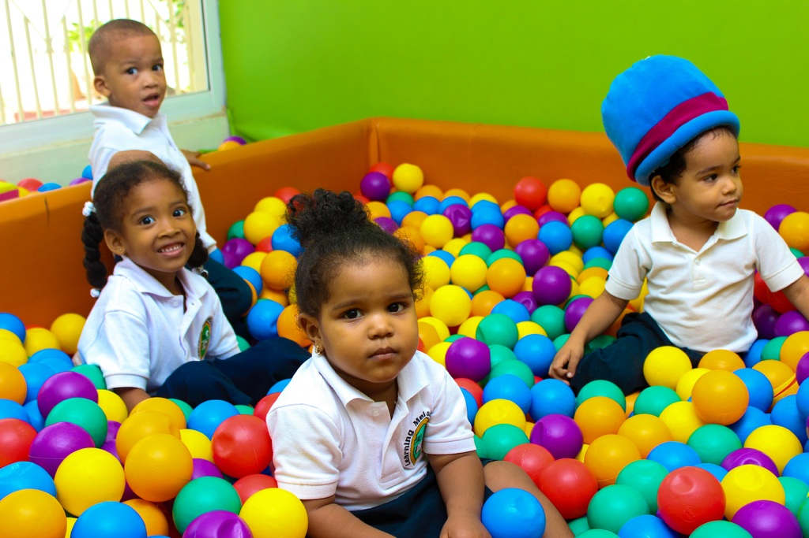
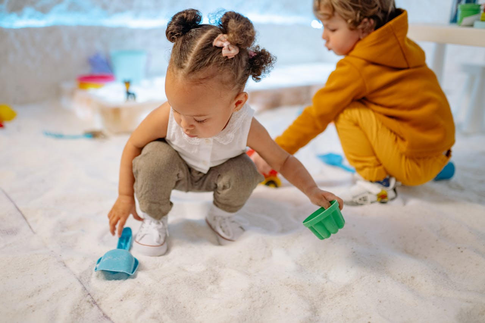
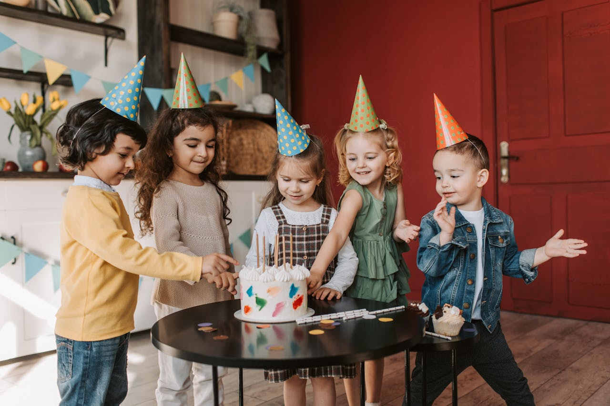

Fontosnak érezzük, hogy a gyermekek önfeledt boldogsága mellett a szülőknek is nyugodt perceket szerezzünk. Néha kell, hogy Anyu és Apu kettesben is eltölthessen néhány órát! De adódhat olyan helyzet is, hogy a kicsiket nem tudják magukkal vinni ügyeket intézni, kórházba, interjúra. Van, akinek abban kell segíteni, hogy gyermekei biztonságban jussanat haza az iskolából, óvódából és út közben esetleg még egy játszótérre és bemehessenek szaladgálni még egyet.Vállaljuk, hogy az ilyen helyzetekben is szívesen áll a szülők rendelkezésére szaképzett és a gyermekek által más ismert gondozói csapata segítségével.
Van úgy, hogy a család egyszerre vesz részt olyan rendezvényen (például esküvőn, keresztelőn, családi rendezvényeken), ahol a gyermekek hamar elunják magukat, hiszen nincsen számukra megfelelő szórakozási lehetőség. A Babapihenő csapata vállalja, hogy az ilyen családi rendezvényeken, a hely és az esemény jellegének megfelelően gondoskodik a kicsik szórakoztatásáról, és így szüleik is önfeledten kikapcsolódhatnak.
A szülők akkor a legboldogabbak, ha látják, hogy csemetéjük vidáman játszik a barátaival. Az utána következő rendrakás viszont bizonyára mindenki rémálma. Ezen segítünk: szervezze babazsúrját/gyermeke születésnapi buliját a Babapihenőbe – Önnek csak az enni-,innivalóról kell gondoskodnia, a játékok előkészítése és a buli utáni elpakolás/takarítás már a mi feladatunk!
